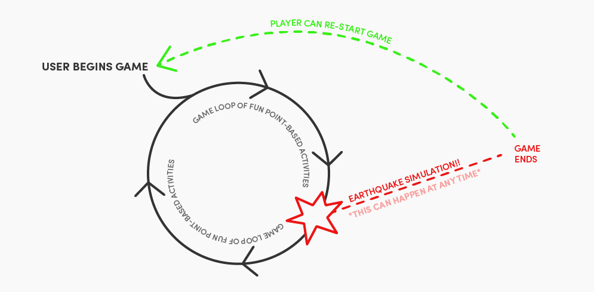
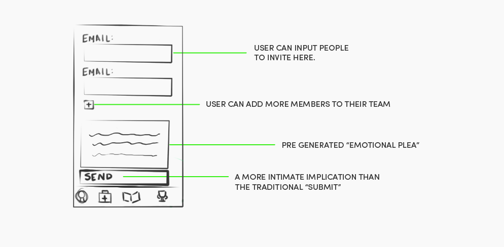
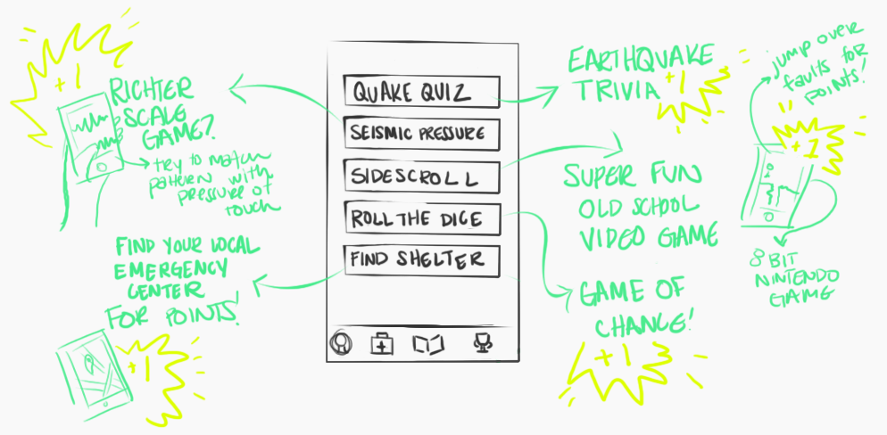
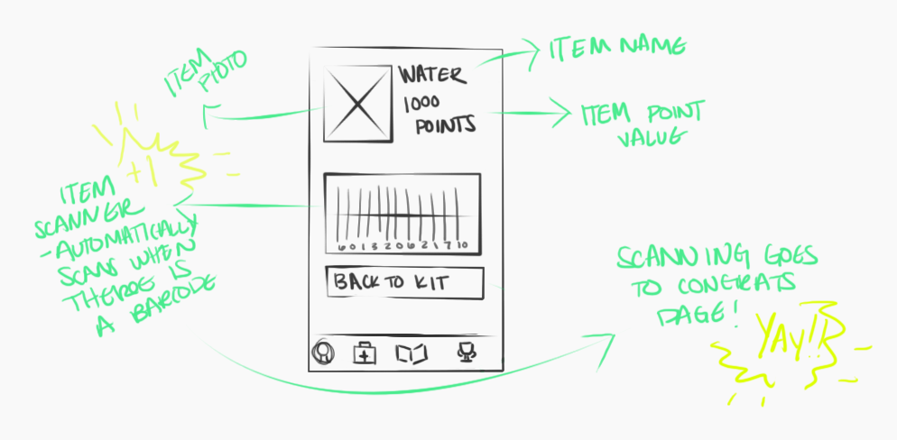
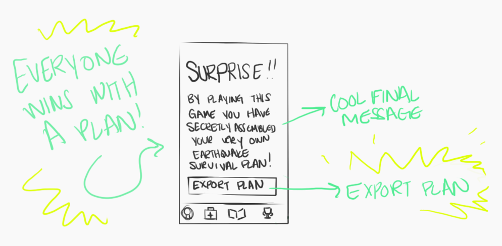

Role: Designer
Team: SEISMICdesigns
Tools: Sketch, Illustrator, Invision
Project Completed: November 2016
FEMA projects that the Cascadia subduction zone earthquake will destroy more than a million buildings on the west coast. At least 27,000 people are expected to die in the initial event, a figure that pales in comparison to what will happen in the subsequent days and weeks. Seattle’s residents are not prepared.
Seismic Hero is a game that hopes to prepare Seattle for The Big One. The goal for this project was to game-ify preparing for a disastrous earthquake in Seattle. We wanted to make preparing for this possible “big one” fun. Seismic Hero is built as a learning tool disguised as a fun and kind of addicting game that can be used by educators, families, and even groups of friends.
Concept & Initial Research
We wanted to simplify and consolidate earthquake preparedness information, to change the way people think about being prepared, and come up with a plan for engaging the population in the process of becoming better educated and better prepared.
In order to design a solution, we sent out a general screener survey to find a group of possible users to interview. We wanted to narrow down to a few individuals who were interested enough in talking with us about their experience planning or not planning for the possible earthquake in Seattle.
We planted the screener in several corners of the internet. The one posted in the r/Seattle forum on Reddit was by far the most active home for the survey. Responses tumbled in and began to tell a story of their own.
User Research
Screener Results
91% of our respondents thought it was important to prepare for the earthquake, yet nearly 91% of the same pool could not tell you where their local emergency shelter would be. This communicated to us that we would probably be working with people who felt strongly about preparing themselves for a possible earthquake, but are likely overwhelmed with the information currently availble to them.
User Interviews
We set up phone and in-person interviews with a narrowed pool of eight people to politely ask if they were prepared for disaster. We gained some seriously interesting insights. The combination of the unpredictable nature of earthquakes and the amount of information thrown into the universe about what could happen has made for an interesting group of possible users.
An earthquake is not a polite natural disaster. They do not call ahead.
Dueling Personas
In our research two very clear and very distinct personalities revealed themselves. Most of our interviews revealed that most people are generally worried about the predicted earthquake. Half of our interview respondents displayed personality traits of proactive preparedness. These were the people who had bug-out-bags, concrete earthquake plans, and garages full of extra water jugs and walkie talkies.
The other half of our subjects were skeptical about the possible impact of the earthquake. They are overwhelmed about where to start with planning for a natural disaster at all. These possible users have seen the articles and read the news, and aren't convinced the science is solid. They currently have no plans with their friends or family or extra supplies stored away. A few have even said, in the event of an earthquake, they know they'd be toast and they had made peace with it already.
This qualitative data made for some very interesting whiteboarding sessions where we narrowed our personas.

User Profiles

Jesse
Jessie is a natural born skeptic. He lives life one day at a time. When it comes to preparing for a possible earthquake, Jesse doesn't bat an eye. In Seattle they've said that this quake has been coming for years now to the point that it's all white noise. He prefers to think about other things because all of the information and possible emergency equipment gives him a headache to think about.
User Pains
1. Information overload
The biggest pain point seemed to be the consolidation of information. FEMA and the Red Cross actually have very good disaster preparing mobile applications, but they contain a lot of information, and this user tends to err on the side of TL;DR.
2. Lack of a clear plan
A successful plan for surviving an earthquake involves creating a detailed and specific plan. Our prepared group of users had these. Not only did they have plans specific to their families and neighborhoods, they had binders full of extra cash and detailed descriptions on evacuation routes and emergency shelters.
3. Ignorance is Bliss
The overwhelming majority of our unprepared respondents outright admitted to not prioritizing this scenario in their lives. They just plain didn't want to think about it or devote time to preparing. In the grand scheme of their lives, and the questionable nature of the earthquake they just don't think it's worth spending time or energy on. Unless someone else were to make a plan for them, or something major were to happen, they just aren't going to be convinced it's important.
Notable Quotes:
"What would make you start planning for an earthquake?"
"Probably an earthquake."

Pat
Pat is prepared. He stays informed about everything and anything that could possibly displace the current path of his life. He is always up-to-date on all current planning tools and enjoys that they allow an easy way to consolidate information. Pat strives to be a community builder who ensures safety and preparedness to all of those within the community.
User Pains
1. An uninformed community.
This user has a singular pain point, his uninformed community. Pat is ready, but his biggest obstacle is convincing others to to be as ready as he is. He knows that in a disaster situation his biggest problem will be a horde of people who couldn't take care of themselves.
Notable Quotes:
"If you need it and you don’t have it, you’re in trouble."
New Challenges
With a week and a half left in our sprint, we definitely wanted to forge ahead with the design. Our research was showing we were going to need several procedural parts of the application. We needed a way to make an emergency kit list, a way to communicate a plan with friends and family, and a place to store all of this information.
Why would Jesse download this app?
A procedural application that was purely informational would bum Jesse out. There's no way he would elect to put something like that on his phone without some major incentives. We decided to explore a hip option in the application world game-ification.
Pat already uses applications like the Red Cross or FEMA app. We already know he's on-board with any preparedness tool. He cares already. Jesse has to be tricked into caring, and it's our job to turn preparing into a game. This actually works for our team. We have two distinct and virtually opposite personas, where one is actually a huge liability to the other in the case of an emergency. We need definitely need a game, but we need a game that connects the Pats to the Jesse's. We also need a game that keeps a Jesse playing.
Game Mechanics
We started thinking about how games are constructed, and we knew we needed some kind of a loop. The user begins the game, and some kind of desire engine keeps them playing. We needed to design a reason for people to keep logging in and wanting to keep playing. We also needed an ending. One of my favorite creative leads has always said something that stuck with me, "Design with the end in mind."
Concept 1: The Game Ends with an Earthquake
In one of our intitial interviews, something that was said really stuck out to us. When asked what would motivate them to prepare for an earthquake, one of our users answered simply, "An earthquake." Knowing this would be a mobile-game, we thought how funny it would be to simulate an earthquake with a cell-phone, when it hit us. We can! What if the game was ended with your cell-phone vibrating to indicate an earthquake has happened.

Concept 2: The Emotional Plea
Now that we had our way out, we needed our way in. With two wildly different personas, we knew we needed two different ways to find the application. Pat would be the first to download. He likes the idea of a disaster-preparing game, and wants to share it with his family and friends. The urge to share and organize is the driver within Pat we can capitalize on for the game.
Jesse's way in is slightly more nuanced, but relies on Pat's need to educate and organize. In order to engage Jesse in this game, we thought a social aspect was definitely necessary. It was very important for us to design a way for a Pat to invite a Jesse to a game. Sending an e-mail invitation at the beginning would be an easy way to invite players in and encourages competition in a team-environment. We also thought it would appeal to a player's guilty-conscience to include a pre-generated emotional plea within the email invitation. Sorry D.A.R.E but people definitely respond to peer pressure.

Concept 3: Daily Quests
We had our way in and our way out, but what keeps our player playing? We thought it would drive desire to have a section of the application that refreshes anew each day. This could be a catch-all section where mini-games live. These mini-games exist as another way a user can gain points and increase their status in the game. The possibilities here are endless. We loved the idea of including earthquake trivia, a game of chance, and even an old-school sidescroller game. Each day brings the possiblity of a new game, new points, and another reason for the user to log-in.

Concept 4: Item Hoarding for Points
Another addicting aspect to gamification is the idea of searching and collecting with the incentive of winning points and status. We thought our users would respond to something that would earn them points by scanning items in a grocery store. The items would be a pre-generated list of FEMA-recommended items in case of an emergency. Each scanned barcode would equal points. In our game you don't necessarily have to buy the items you scan, but it does give you a list of items you should have if you do choose to buy an emergency kit.
Our Jesse's would love this because it's an easy and procedural way to gain points for the game, and has the possibility of making an everyday grocery store trip into a fun way to role-play facing the exhilarating danger of an earthquake.

Concept 5: The Surprise Earthquake Plan
The game idea is great and all, but it kind of blows past the inital goal of this entire project. It's a serious problem that people in Seattle are not prepared for this possibly very devastating earthquake. Everyone in this city should consider making a plan, but it's very hard to force people to do what is best for them. With this game, though, we have the opportunity to trick people, but with the best intentions. This game, while presenting a game-ified front, can collect data on the back end through what the user inputs through collecting and scanning objects at the supermarket and the mini-games. Instead of just storing this data away, this game can utilize it in an incredibly powerful way. At game end, we could deliver this information as a personalized emergency plan, built entirely by user inputs given during game-play.

Initial User Flow
We had our first pieces, and now it was time to assemble the jigsaw puzzle. Battling scope-creep and feature-itis we forged carefully ahead with a singular goal in mind - build our first full user flow for this game from beginning to end.
We spent a very long and arduous white-board session that lasted about three hours, but this doodled mess helped us sort out our thoughts and establish motive for each part of the game.
Final User Flow
A slimmer version of our notes revealed three clear sections of the game. The first half being an onboarding section where the games initiator sets up his team, and sets how long the game will last. The second half of gameplay involves the game loop, and the actual gameplay. Then the final being the earthquake ending.
Whiteboard Screens & Naming Ceremony
Our final user flow led quickly into us quickly constructing screens together as a team. With our features built first, the in-between screens came together naturally. At this point in the sprint, it was crucial that we create wireframes in order to user-test our assumptions.
We also realized we hadn't named our application yet. We quickly took to the thesaurus and thought about our user personas. We made a world cloud of every earthquake term we could find and looked hard at our story. This game was about community engagement and saving lives, and that's when it hit us.
Our main user Pat's overarching goal is that he wants to be a hero.
The game has to be called Seismic Hero.
Wireframes
User Testing
With our wireframes done we could finally start user-testing and getting live feedback on our prototypes so we could begin iterating. Using Lookback I was able to export our wireframe prototype from Sketch to Invision, and then record both my phone screen and the user at the same time. It was incredibly helpful when we went back over our notes to revise our prototype.
Iteration & Revision
With our wireframes done we could finally start user-testing and getting live feedback on our prototypes so we could begin iterating.
High Definition Prototype
After a few rounds of user-testing we gradually made our way to a high-definition prototype. We took a ton of inspiration from old video games and decided an 8-bit look/tone/feel was spot-on for Seismic Hero.
You can check out the final prototype on Invision.